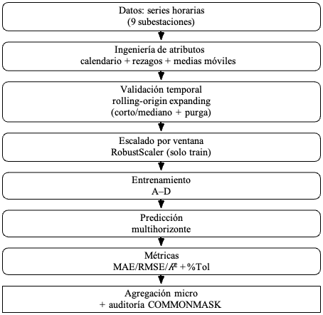
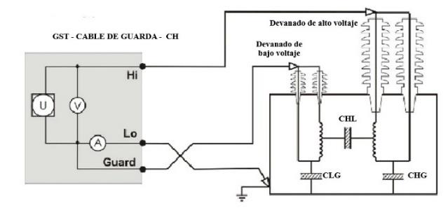

Power systems, energy planning and applied electrical engineering
My research covers power-system planning and operation, renewable integration, optimization, forecasting, high-voltage engineering and intelligent energy systems. The projects are presented by institution to show the different stages and collaborations that have shaped this work.
Planning and optimization
Generation and transmission expansion, hydrological uncertainty, reservoirs, reconductoring and policy pathways.
Operation and system analysis
Network security, reactive compensation, flexibility, reliability and operating conditions.
Data-driven power systems
Demand forecasting, machine learning and reproducible computational analysis.
Applied electrical engineering
High-voltage testing, power electronics, renewable-energy systems, microgrids and Hardware-in-the-Loop validation.
Methods, data and experimental work
Examples of research outputs that connect computational methods with applied electrical engineering.
Electrical-demand forecasting
A reproducible framework for short- and medium-horizon forecasting using rolling temporal validation, XGBoost, TabNet and FT-Transformer models. The work uses hourly records from Ecuadorian distribution substations.


Lightning-impulse test pre-configuration
ATPDraw modeling and experimental validation of full lightning-impulse tests on power transformers, combining laboratory measurements with simulation for pre-adjustment of the impulse generator.
Projects by institution
ESPOL
Research developed through FIEC and the PhD program in Electrical Engineering, Power and Energy.
Long-Term Planning of Hydro-Dependent Power Systems: A Modeling Framework for Sustainable Energy Transition
The research integrates long-term generation and transmission expansion with monthly operation, reservoir constraints, hydrological uncertainty, reconductoring and policy pathways. Ecuador is the main case study, and the work led to the PARAMO framework and its public Results Explorer.
Dynamic reactive resources and stability of the future Ecuador–Peru HVAC interconnection
Assessment of dynamic reactive compensation and system stability using advanced optimization algorithms.
AC mathematical modeling for optimal photovoltaic generation siting in distribution networks
Optimal location of photovoltaic generation using AC network models.
IPEAR: Intelligent Planning of Electrification for Agriculture using Renewable
Renewable-based electrification planning for agriculture. The project received funding from the Group on Earth Observations and Microsoft.
ESPOCH
Current work includes multidisciplinary projects in energy, monitoring and intelligent microgrids.
Embedded systems for real-time monitoring of drinking-water quality in rural areas of Chimborazo
Multidisciplinary work on rural water-quality monitoring. My contribution includes technical analysis of deployment alternatives and the power-supply and backup system for the monitoring stations.
VIGA-MH — HIL validation of multiobjective intelligent agents for advanced energy management in hybrid AC/DC microgrids
Research on real-time modeling, Hardware-in-the-Loop validation, multiobjective optimization and reinforcement-learning-based energy management, with counterparts at the University of Chile Microgrid Control Laboratory and Universidad San Francisco de Quito.
UTC
Research projects associated with my work in Electrical Engineering.
Smart grids and distributed generation
Research on distributed generation and the evolution of electrical distribution systems.
Efficient systems for electricity supply and use at local, regional and national levels
Formative research focused on efficient electricity supply and use, with participation of students and faculty.
Efficient systems for electricity supply and use at local, regional and national levels
Continuation of the same research line through project activities and student work.
Planning strategies for electrical distribution systems in the context of the energy transition
Distribution-system planning under changes in generation, demand and energy-transition conditions.
Polish Academy of Sciences
Research collaboration with the Division of Energy Economics, Mineral and Energy Economy Research Institute (MEERI PAS), Kraków.
Long-term energy and power-system planning
Collaboration on hydro-dependent electricity systems, water-resource uncertainty, demand projection, generation and transmission expansion, mathematical optimization, computational experiments and preparation of scientific outputs. The work was coordinated with Dr. Pablo Benalcázar Alomía and connected with PLGrid / ACK Cyfronet AGH computational resources.
Public research record
Publications and research outputs are available through ORCID and Google Scholar.